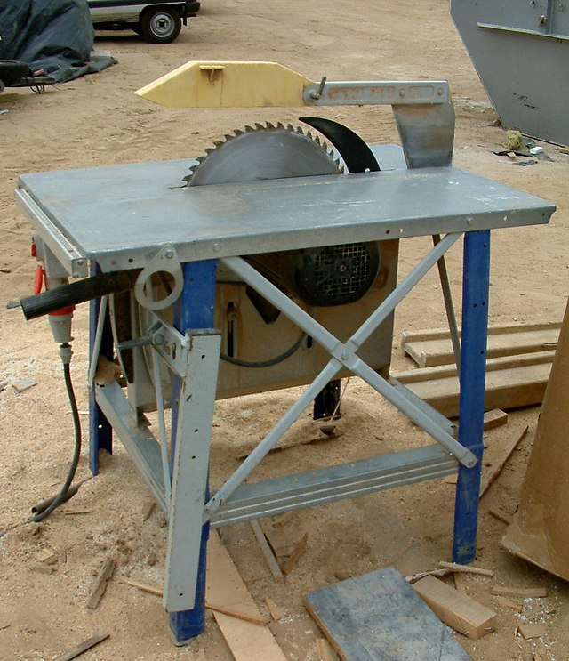

La sierra es una herramienta que sirve para
cortar madera u otros materiales
. Consiste en una hoja con el filo dentado y se maneja a mano o por otras fuentes de energía, como vapor, agua o electricidad.
